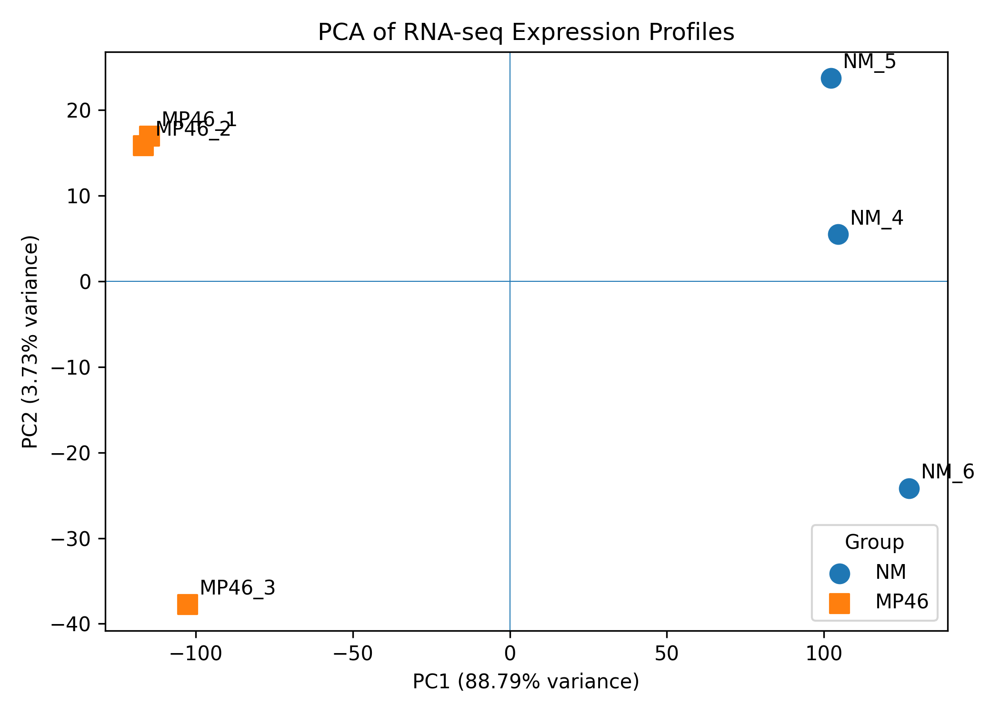
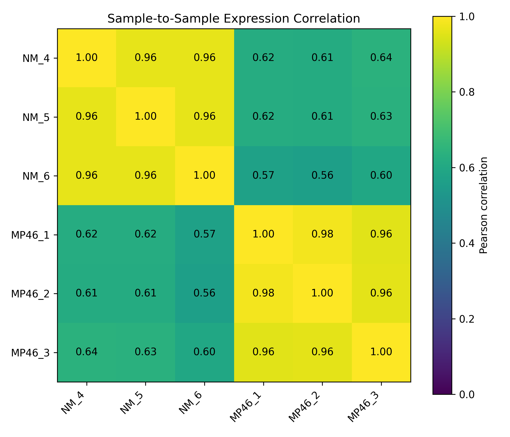
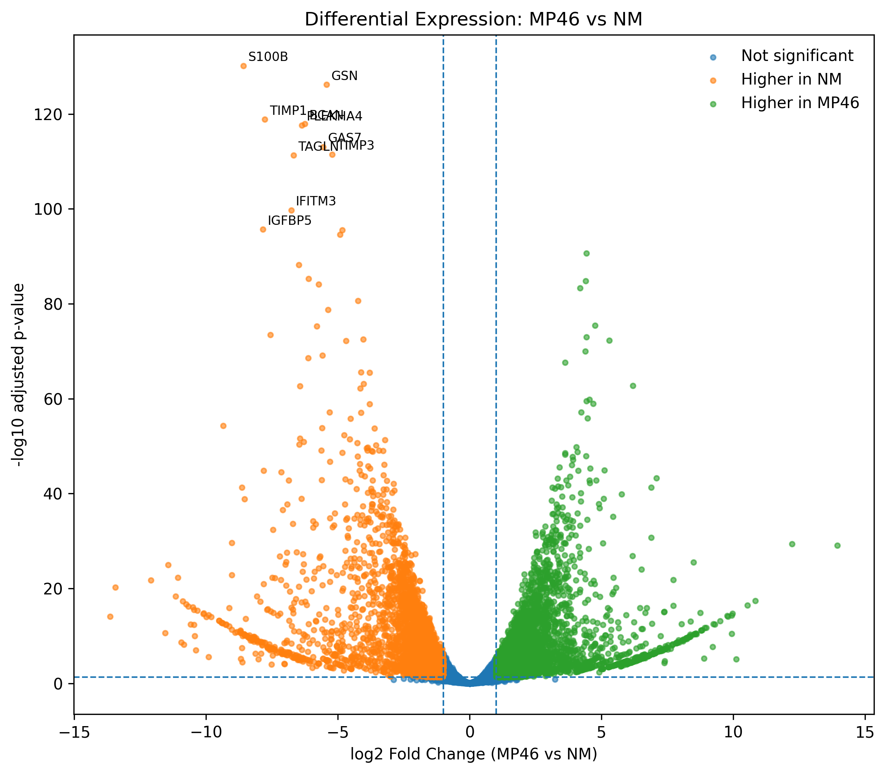
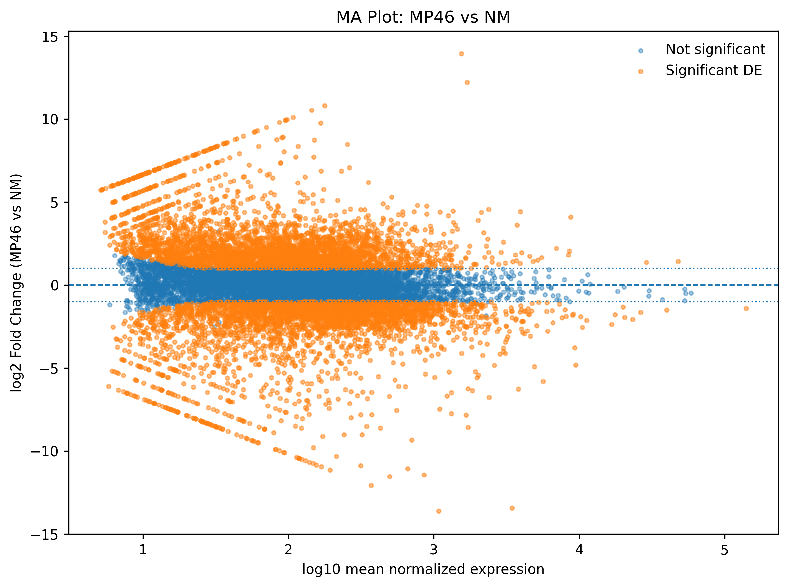
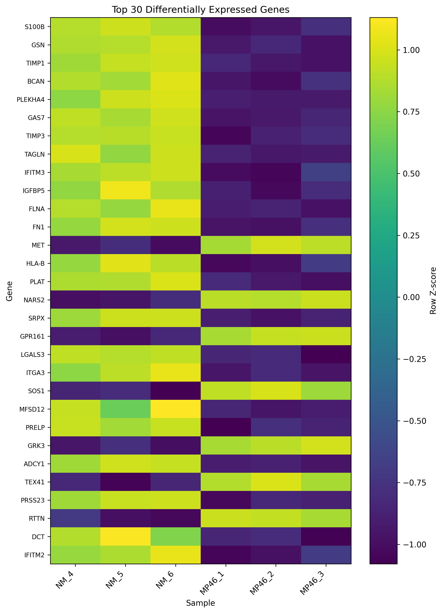
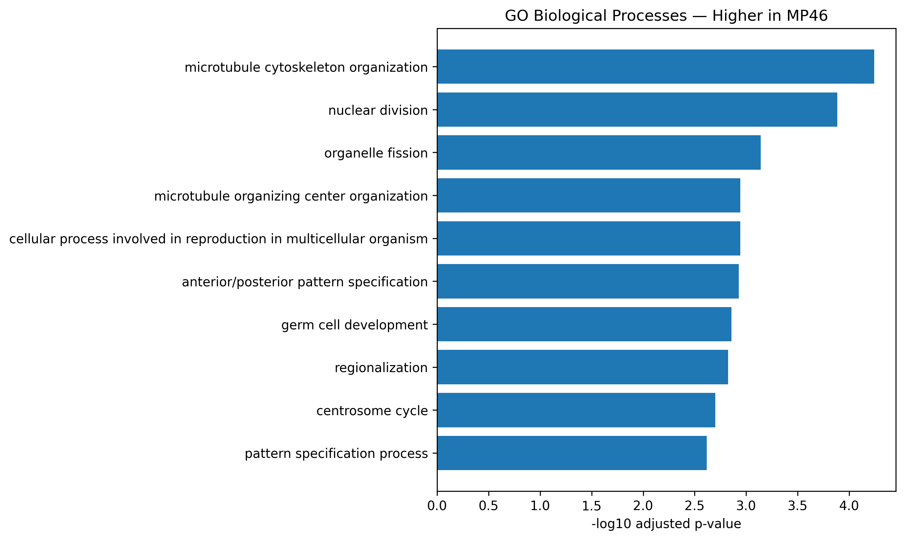
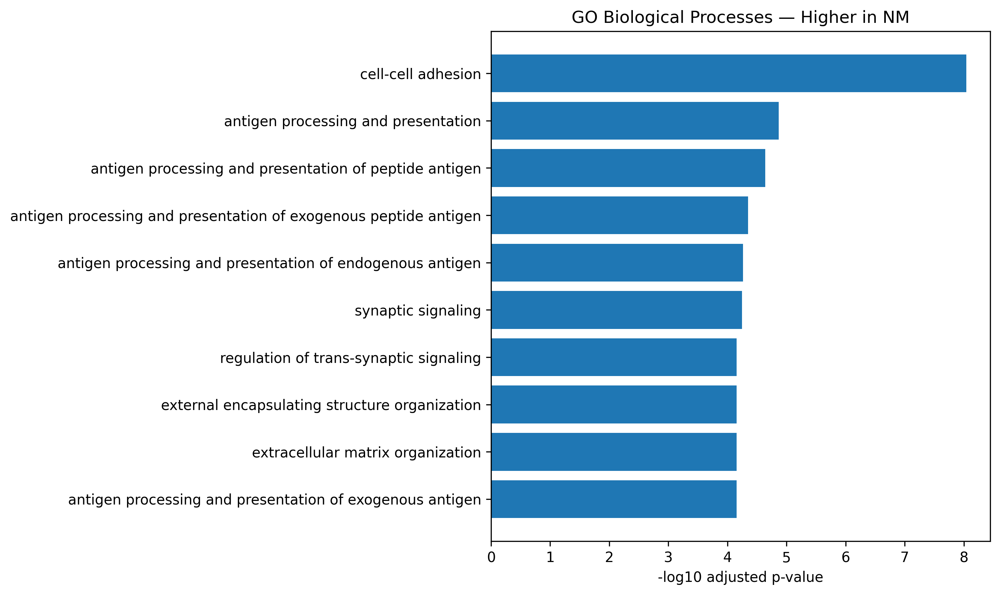
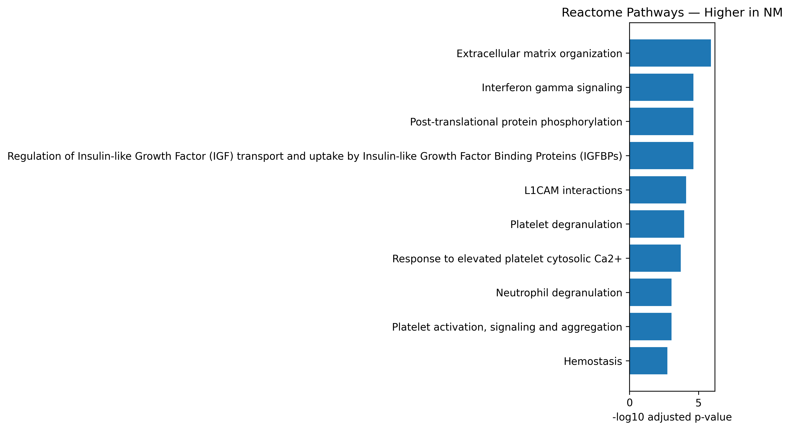

RNA-Seq Analysis Report
GSE199679 — MP46 vs NM
Analysis Summary
This report summarizes a reproducible bulk RNA-seq analysis comparing MP46 and NM samples.
The analysis included three biological samples per group:
| Group | Samples |
|---|---|
| NM | NM_4, NM_5, NM_6 |
| MP46 | MP46_1, MP46_2, MP46_3 |
The workflow included sequencing quality control, alignment, gene-level quantification, expression-level quality control, differential expression analysis, and functional enrichment.
FASTQ
↓
FastQC / MultiQC
↓
STAR alignment
↓
featureCounts
↓
Count QC and filtering
↓
Expression QC
↓
DESeq2
↓
Functional enrichmentResults at a Glance
| Analysis | Key Result |
|---|---|
| Samples | 3 NM + 3 MP46 |
| STAR alignment | 88.3–95.2% uniquely mapped |
| Genes retained after filtering | 12,728 |
| PCA | PC1 = 88.79%; clear NM/MP46 separation |
| Sample correlation | Within-group ≈ 0.96–0.98 |
| Differential expression | 6,816 significant genes |
| Higher in MP46 | 3,495 genes |
| Higher in NM | 3,321 genes |
| GO BP enrichment | 31 MP46 / 236 NM terms |
| Reactome enrichment | 0 MP46 / 46 NM pathways |
Primary finding: NM and MP46 show strongly distinct transcriptomic profiles. Genes higher in MP46 are enriched primarily for cell-division and microtubule-associated processes, whereas genes higher in NM show broader enrichment involving extracellular-matrix, cell-adhesion, immune-associated, and antigen-processing processes.
Methods Overview
Reference Genome
RNA-seq reads were aligned to the human GRCh38 primary assembly using STAR.
Gene annotation was based on GENCODE v48.
The same annotation release was used for:
- STAR genome indexing
- featureCounts gene quantification
- differential-expression gene annotation
Read Alignment
STAR alignment was performed in a Linux ARM64 Docker environment to provide a reproducible execution environment on Apple Silicon.
Alignment rates were high overall.
| Sample | Unique Mapping |
|---|---|
| NM_4 | 95.20% |
| NM_5 | 95.16% |
| NM_6 | 95.11% |
| MP46_1 | 88.29% |
| MP46_2 | 94.31% |
| MP46_3 | 89.23% |
Gene Quantification
Gene-level counts were generated using featureCounts.
The libraries were empirically determined to be reverse-stranded using RSeQC and were therefore quantified using:
-s 2Assignment rates ranged from approximately 77% to 85%.
Count Matrix Processing
The initial featureCounts matrix contained:
78,894 genesLow-expression genes were filtered using the rule:
Retain genes with at least 10 raw counts in at least 3 samples.
After filtering:
12,728 genes retainedThe filtered matrix contained:
Duplicate gene IDs: 0
Missing values: 0
Negative counts: 0Expression-Level QC
Normalization
Median-of-ratios normalization was used for exploratory expression QC.
| Sample | Size Factor |
|---|---|
| NM_4 | 1.026 |
| NM_5 | 0.982 |
| NM_6 | 0.837 |
| MP46_1 | 1.023 |
| MP46_2 | 1.089 |
| MP46_3 | 1.134 |
Normalized counts were log2 transformed for PCA and sample-correlation analysis.
Raw integer counts were retained separately for DESeq2.
Principal Component Analysis

PC1 explained 88.79% of total expression variance and clearly separated NM from MP46.
PC2 explained an additional 3.73%.
Together, the first two principal components represented 92.52% of expression variation.
Sample Correlation

Within-group expression correlations were high:
NM: approximately 0.96
MP46: approximately 0.96–0.98Between-group correlations were substantially lower:
approximately 0.56–0.64No obvious expression-level outlier was identified, and all six samples were retained.
Differential Expression
Differential expression was performed with DESeq2 using:
Design: ~ Group
Contrast: MP46 vs NMTherefore:
log2FoldChange > 0 → higher in MP46
log2FoldChange < 0 → higher in NMSignificant differential expression was defined as:
adjusted p-value < 0.05
AND
|log2FoldChange| >= 1Differential Expression Summary
| Result | Genes |
|---|---|
| Genes tested | 12,728 |
| padj < 0.05 | 8,501 |
| Significant DE genes | 6,816 |
| Higher in MP46 | 3,495 |
| Higher in NM | 3,321 |
| padj < 0.05 and |log2FC| ≥ 2 | 3,200 |
Volcano Plot

The volcano plot demonstrates extensive differential expression in both directions.
MA Plot

The MA plot shows differential-expression effect sizes across the range of mean gene-expression abundance.
Top Differentially Expressed Genes

The top 30 genes ranked by adjusted p-value showed strong group-specific expression patterns.
The three NM samples generally showed similar expression profiles, as did the three MP46 samples.
Functional Enrichment
Differentially expressed genes were divided by direction before functional enrichment:
Higher in MP46: 3,495 genes
Higher in NM: 3,321 genesGO Biological Process and Reactome enrichment were performed separately for the two gene sets.
The enrichment background consisted of genes tested in the DESeq2 analysis.
Enrichment Summary
| Gene Set | GO Biological Process | Reactome |
|---|---|---|
| Higher in MP46 | 31 | 0 |
| Higher in NM | 236 | 46 |
Genes Higher in MP46

Prominent enriched themes included:
- nuclear and cell division
- microtubule organization
- centrosome-associated processes
- organelle fission
- developmental and patterning processes
No Reactome pathways passed the specified significance threshold for the MP46-higher gene set.
Genes Higher in NM

GO enrichment included:
- cell-cell adhesion
- antigen processing and presentation
- extracellular matrix organization
- cellular signaling and interaction processes
Reactome

Prominent Reactome themes included:
- extracellular matrix organization
- IGF transport and IGF-binding proteins
- interferon-gamma signaling
- platelet activation and degranulation
- hemostasis
- extracellular matrix degradation
- ER-phagosome pathway
- ECM proteoglycans
Overall Findings
The independent analysis stages produced a consistent expression-level pattern.
PCA
↓
Strong separation of NM and MP46
Sample correlation
↓
High within-group reproducibility
DESeq2
↓
6,816 significant DE genes
Functional enrichment
↓
Distinct direction-specific biological signaturesGenes higher in MP46 were enriched primarily for cell-division and microtubule-associated processes.
Genes higher in NM showed broader enrichment involving extracellular-matrix, cell-adhesion, immune-associated, and antigen-processing pathways.
These enrichment results describe expression-associated biological signatures and should be interpreted in the context of the original experimental design.
Reproducibility
The analysis was implemented using:
- FastQC
- MultiQC
- STAR
- SAMtools
- RSeQC
- featureCounts
- Python
- R / DESeq2
- clusterProfiler
- ReactomePA
- Docker
- Quarto
Validated scripts are maintained in the project repository under:
scripts/Detailed technical documentation is available under:
docs/Large FASTQ, BAM, reference, index, and intermediate count files are maintained outside the GitHub repository.
Conclusion
The RNA-seq workflow successfully progressed from raw paired-end sequencing reads through alignment, quantification, expression QC, differential expression, and functional enrichment.
Expression-level QC showed strong replicate consistency and clear separation between NM and MP46.
Differential-expression analysis identified extensive transcriptional differences between the groups, and direction-specific enrichment analysis revealed distinct functional signatures.
This report provides a concise collaborator-facing summary, while the repository contains the scripts and technical documentation required to reproduce the analysis.